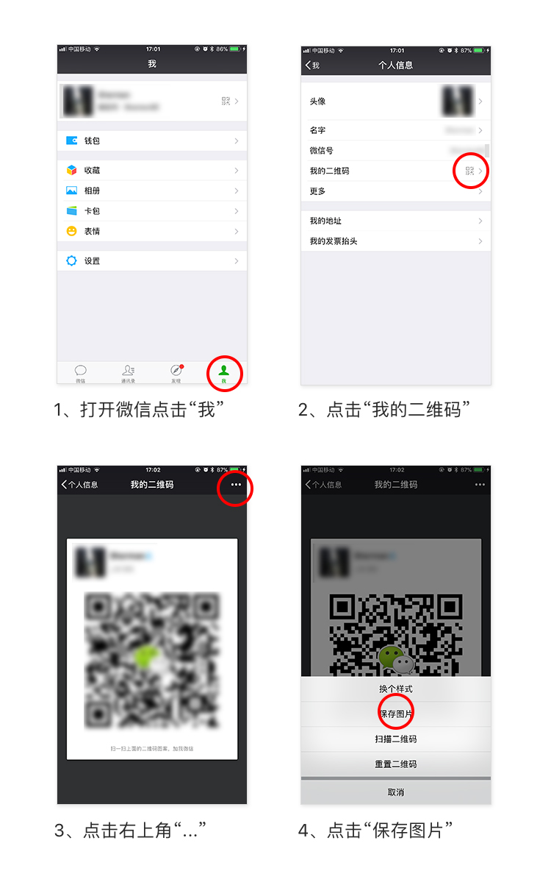

<!--
  Generated template for the MywechatPage page.

  See http://ionicframework.com/docs/components/#navigation for more info on
  Ionic pages and navigation.
-->
<ion-header>

  <ion-navbar>
    <ion-title>我的微信号</ion-title>
  </ion-navbar>

</ion-header>


<ion-content class="bgcolor">
  <div style="padding:20px 0;background:#fff;">
    <button ion-item  no-lines (click)="avatarChoice()">
      <h2>微信二维码截图</h2>
      <p>上传后，顾客可以扫这个二维码加微信</p>
      <ion-thumbnail item-right>
        
      </ion-thumbnail>
    </button>
  </div>
  <div class="jg"></div>
  <button ion-item (click)="getWechat()" no-lines>
    <h2>如何获得微信二维码截图</h2>
  </button>
  <div class="card" *ngIf="isShow">
    
  </div>
</ion-content>
